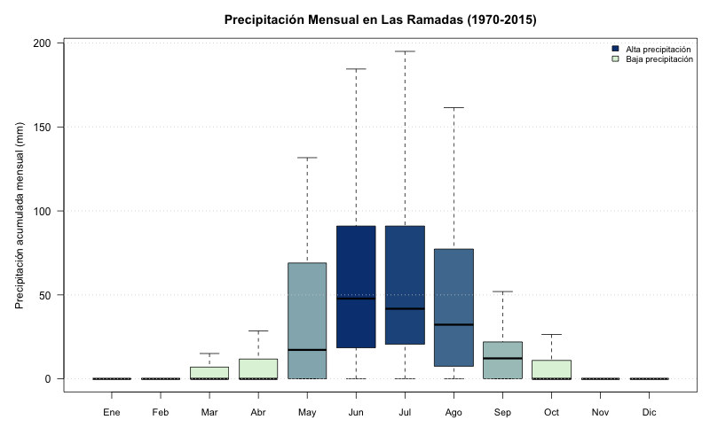

Análisis exploratorio de la sequía en la Precordillera del Limarí (Región de Coquimbo, Chile)
Introducción

El Limarí Precordillerano se encuentra presente en las comunas de Monte Patria y Combarbalá (Región de Coquimbo), se caracteriza por su clima semiárido, con veranos secos e inviernos con breves precipitaciones. Esto se debe principalmente a que la zona es altamente sensible al ENOS - El Niño Oscilación Sur (Meza, 2013), un patrón climático natural en el Pacífico que incluye fases cálidas (El Niño) y frías (La Niña). Este fenómeno oscila cada 2 a 7 años y genera diferencias importantes en los patrones de precipitación, temperatura y humedad.
Los habitantes de la precordillera se han adaptado a esta oscilación teniendo un sistema de pastoreo conocido como transhumancia, la cual se divide las zonas de pastoreo en veranada e invernada. Esta forma de ganadería tradicional regula los tiempos de pastoreo en función de la disponibilidad de recursos hídricos y es una forma de adaptarse a la oscilación constante de precipitaciones producto del ENOS (Erazo & Garay-Flühmann, 2011). A pesar de esta adaptación tradicional, los crianceros reportan en la actualidad que la temporada de veranadas está cambiando por una disminución nunca antes vista sobre la disponibilidad de agua y pasto.
Audiencia
Esta página está pensada para profesionales que les interese conocer sobre el comportamiento hidrológico de la precordillera del Limarí y también para habitantes del Limarí que deseen observar cómo ha cambiado el patrón de lluvia y los periodos de sequía en su provincia, es por esto que se emplea un lenguaje académico pero no excesivamente técnico para explicar los conceptos y métodos empleados.
Objetivos
Objetivo general: Explorar los patrones de precipitación en el Limarí precordillerano a través de dos estaciones meteorológicas durante el periodo 1970-2015
Objetivos específicos:
- 1) Identificar los patrones de precipitación a una escala anual - 2) Analizar los cambios en los patrones de sequía durante el periodo 1970 - 2015 - 3) Comparar el comportamiento de ambas estaciones ante la sequía
Materiales y Métodos
Para analizar la disponibilidad de recursos hídricos en la zona de estudio, se realizó un análisis exploratorio en dos estaciones meteorológicas: Cogotí (Comuna de Combarbalá) y Las Ramadas (Comuna de Monte Patria) durante el periodo 1970-2015. Este análisis incluye la creación de boxplots de precipitación mensual y líneas de tiempo del Índice de Precipitación-Evapotranspiración Estandarizado (SPEI) para identificar los periodos de sequía, este permite medir la sequía de un sector a partir de la comparación temporal de datos de precipitación mensual, temperatura máxima y minima (Hargreaves, 1994). Para este estudio, se utilizó SPEI 12 (el cual mide sequia en un periodo de 12 meses consecutivos) y SPEI 3 (mide sequia en un periodo de 3 meses consecutivos), lo que permite observar los impactos de la sequía a diferentes escalas (Beguería et al,. 2014).
Área de Estudio

Precipitación mensual
La precipitación en el Limarí precordillerado se caracteriza ser casi nula entre los meses de noviembre y febrero. La recarga hídrica se da durante los meses de mayo y agosto (periodo de invernada), donde se activan las quebradas que recargan los ríos y nieva en la cordillera. Durante los meses de invernada, las precipitaciones tienden a ser tan irregulares que llegan tener a valores atípicos altos (para mejorar la visualización de los gráficos estos han sido limpiados del gráfico)
El patrón de precipitación anual se observa de la siguiente forma en las dos estaciones
  Si bien ambas exiben un aumento importante entre los meses de mayo y agosto, las precipitaciones en Las Ramadas son más altas que en Cogotí. Su rango también se expande, teniendo precipitaciones hasta octubre. Esto puede deberse a que Las ramadas se ubica a más altura, teniendo una mayor precipitación por su cercanía con la Cordillera de los Andes
Si bien ambas exiben un aumento importante entre los meses de mayo y agosto, las precipitaciones en Las Ramadas son más altas que en Cogotí. Su rango también se expande, teniendo precipitaciones hasta octubre. Esto puede deberse a que Las ramadas se ubica a más altura, teniendo una mayor precipitación por su cercanía con la Cordillera de los Andes
Análisis del índice SPEI en Cogotí y Las Ramadas
La clasificación del SPEI divide en valores positivos y negativos la humedad, como se observa en la siguiente tabla:  A partir de series históricas de precipitación y temperatura máxima/mínima, se calcula:
A partir de series históricas de precipitación y temperatura máxima/mínima, se calcula:
- La evapotranspiración potencial (ETP) mediante el método de Hargreaves.
- El balance hídrico mensual (precipitación menos ETP).
- El SPEI a distintas escalas temporales (3 y 12 meses), para identificar periodos de sequía y humedad.
## Exploración de datos
- La serie de tiempo de SPEI12 permite ver tendencias de sequía prolongada en el tiempo.
 En este caso, podemos diferencias claves entre cada estación. Si bien ambas poseen periodos de sequía y humedad en que se sincronizan parcialmente, Las Ramadas tiende a tener valores más positivos que Cogotí, teniendo incluso valores positivos en 1980 cuando se marcaron índices de que Cogotí estaba severamente. Ambas estaciones pasan por picos de sequía desde 1994, con pocos años que vuelven a ser húmedos por falta de precipitación. En el periodo de 1993 hasta 2010 se comportan de forma similar ambas estaciones (Aunque Las Ramadas sigue teniendo valores más positivos), después de esto, Cogotí tiene años más húmedos que Las Ramadas, pero ambos sectores se ven afectados por periodos más extensos de sequía, habiendo pocos húmedos desde 1994.
En este caso, podemos diferencias claves entre cada estación. Si bien ambas poseen periodos de sequía y humedad en que se sincronizan parcialmente, Las Ramadas tiende a tener valores más positivos que Cogotí, teniendo incluso valores positivos en 1980 cuando se marcaron índices de que Cogotí estaba severamente. Ambas estaciones pasan por picos de sequía desde 1994, con pocos años que vuelven a ser húmedos por falta de precipitación. En el periodo de 1993 hasta 2010 se comportan de forma similar ambas estaciones (Aunque Las Ramadas sigue teniendo valores más positivos), después de esto, Cogotí tiene años más húmedos que Las Ramadas, pero ambos sectores se ven afectados por periodos más extensos de sequía, habiendo pocos húmedos desde 1994.
nota metodológica: El SPEI12 no pudo ser calculado para el año 1970 en Las Ramadas por falta de datos del año 1969, lo cual es fundamental para comparar los 12 meses anteriores y sacar el valor.
- La serie de tiempo de SPEI3 permite variaciones más cortas en la disponibilidad hídrica, siendo útil para evaluar los efectos en actividades de agricultura y ganadería (Beguería et al., 2014).
 En ambos casos se puede observar que los periodos de sequía y humedad son mucho más pronunciados y cortos en el tiempo. Además de que contrario al gráfico de SPEI12, Las Ramadas tiene más periodos secos entre 1970 y 1980 que Cogotí. En ambos casos, la severidad de la sequía aumenta , teniendo desde periodos antiguos valores que rondan el severamente seco. Esta situacón se ve intensificada en 2006 y 2009 en Cogotí, donde alcanza valores de extremadamente seco (casi llegando al -3).
En ambos casos se puede observar que los periodos de sequía y humedad son mucho más pronunciados y cortos en el tiempo. Además de que contrario al gráfico de SPEI12, Las Ramadas tiene más periodos secos entre 1970 y 1980 que Cogotí. En ambos casos, la severidad de la sequía aumenta , teniendo desde periodos antiguos valores que rondan el severamente seco. Esta situacón se ve intensificada en 2006 y 2009 en Cogotí, donde alcanza valores de extremadamente seco (casi llegando al -3).
En ambos casos, desde 1994 comienza a tener periodos más extensos que en las décadas anteriores como ocurrío con la serie de tiempo de SPEI12. La sequía sigue siendo bastante aguda para ambos sectores, pero Cogotí nuevamente mejores proyecciones que Las Ramadas en esta serie de tiempo, reprotando periodos cortos de mayor precipitación desde 2010.
| ## Conclusiones |
| Comparando los graficos creados, ambas estaciones exhiben una reducción importante de su precipitación y un aumento de la sequía. El SPEI12 permite ver el comportamiento a largo plazo de la sequía, mientras que el SPEI3 evidencia que los periodos de sequía y humedad tienen una oscilación más corta. A pesar de que Las Ramadas tenga una mayor captación de precipitación que Cogotí, en ambas se puede observar que la precordillera del Limarí ha reducido de forma importante su recarga hídrica desde 1994, anteriormente, ambos sectores oscilaban en periodos cortos de sequía y humedad, pero en los últimos diez años de la serie de tiempo, se muestra que los periodos de sequía son mucho más largos. |
Notas técnicas
Para revisar el código utilizado para los gráficos, puedes hacer click en el link inferior o hacer click en “Análsis de Precipitación” en la parte superior de la página
Datos provenientes de la plataforma https://explorador.cr2.cl del Centro de Ciencia del Clima y Resiliencia (CR2)
Para revisar los paquetes empleados y otra información del proyeccio, puedes revisar la pestaña
Bibliografía
Beguería, S., Vicente‐Serrano, S. M., Reig, F., & Latorre, B. (2014). Standardized precipitation evapotranspiration index (SPEI) revisited: parameter fitting, evapotranspiration models, tools, datasets and drought monitoring. International journal of climatology, 34(10), 3001-3023.
Erazo, M. B., & Garay-Flühmann, R. (2011). Tierras secas e identidad. Una aproximación cultural a las prácticas de subsistencia de las comunidades campesinas del semiárido: Provincia de Elqui, Chile. Revista de Geografía Norte Grande, (50), 45-61.
Meza, F. J. (2013). Recent trends and ENSO influence on droughts in Northern Chile: An application of the Standardized Precipitation Evapotranspiration Index. Weather and Climate extremes, 1, 51-58.